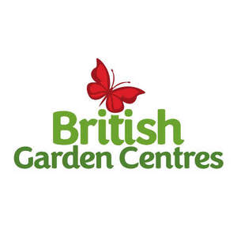
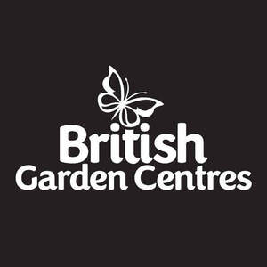
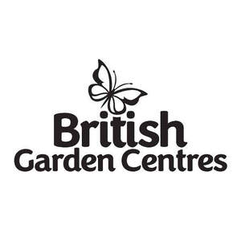

Trade Mark Journal No.2025/030 25 July 2025
UK00004217961 12 June 2025 (1,3,4,7,8,11,16,19,20,21,24,25,26,27,28,30,31,35)
Mark 1

Mark 2

Mark 3

- Class 1
- Fertiliser; compost; peat-free compost; plant foods; chemical products for the treatment of plant diseases; chemicals for use in herbicides; chemicals for use in pesticides; chemicals for use in horticulture; grass fertilisers; soil conditioning chemicals.
- Class 3
- Toiletries; room fragrances; pot pourri; soap; hand cream; body cream; hand wash; bath soaps; bath oils; lotion; household fragrances; fragrances; toiletries gift set comprising of hand creams and body creams.
- Class 4
- Candles; scented candles; outdoor candles; home candles; indoor candles; Christmas tree candles; tealight candles; table candles; candles containing insect repellent; wood pellet fuel; lighter cubes; wood chips.
- Class 7
- Pressure washers; hedge trimmers; lawnmowers; power tools; lawn trimmers; blowers; vacuums; tillers; cultivators; chainsaw; drill; pruner; scarifier.
- Class 8
- Garden tools; cutting tools; hand tools; screwdrivers; saw; spanners; wrenches; shovels; knives; files; drills; hammers; spatulas; clamps; scissors; tongs; pruning saws; Agricultural, gardening and landscaping tools; gardening shears; garden scissors; trowels; weeding tools; garden fork; secateurs; nail file; digging fork; hand cultivator; potting scoop; hand widger; bulb planter; loppers; dibber; transplanting trowel.
- Class 11
- Lighting; Christmas decorations; outdoor lighting; indoor lamps; table lamp; lanterns; barbecues; fire pits; garden lighting; pizza ovens; barbecue cooking apparatus; water fountains; bulbs for lighting; decorative lighting; garden lighting; decorative water feature; Christmas lighting; lanterns; infinity lights; window lights; watering apparatus; sprinklers; solar wall lights; lamp stand.
- Class 16
- Paper garlands; wall decorations; gift cards; gift bags; gift vouchers; note pads; greetings cards; holiday cards; Christmas cards; birthday cards; cards; journal; notebook; gift box; labels of cardboard or paper.
- Class 19
- Paving; gazebos; Prefabricated, non-metal storage sheds; Plant screens (trellis), not of metal; pergolas; arches; arbours; cold frames (Non metallic) for horticultural use in plant propagation; decorative aggregates; garden buildings (non-metallic) namely sheds, tool sheds, log storage sheds, garden workshops, gazebos, pavilions, summer houses, playhouses and greenhouses.
- Class 20
- Sofas; cupboards; bedside tables; coffee tables; dressing table; vanity table; garden furniture; wood furniture; storage boxes; hanging baskets; hand mirrors; parasol stands; mirrors; picture frames; furniture; furnishings; upholstered furniture; cushions; patio furniture; household furniture; lawn furniture; indoor furniture; planters; outdoor storage; birdhouses; birdbath; sunlounges; benches; compact mirror; garden decorations; nesting boxes; hanging baskets.
- Class 21
- Animal feeders; perches for birds; bird feeding tables; mugs; coasters; cookware; kitchen utensils; bird feeders; plant baskets and pots; household or kitchen utensils; cookware; cooking utensils; cooking pots and pans; grills; skillets; dishware; glassware; candle holders; flower pot; garden pot; saucers for flower pots; watering can; cups and mugs; coaster; travel mugs; seed trays; growing pots; decorative planters; trays and saucers; troughs; raised beds and planters; gardening gloves.
- Class 24
- Throws; bedding; blankets; outdoor blankets; picnic blankets; linens; outdoor furniture cover; tea towel.
- Class 25
- Jumpers; socks; skirts; trousers; coats; hats; scarves; sandals; clogs; wellington boots; slippers; clothing; gloves; aprons; weatherproof clothing; footwear; slip-on shoes.
- Class 26
- Flower wreaths; Christmas decorations; artificial plants; artificial trees; artificial flowers; Christmas wreath; Christmas tree; artificial foliage; garlands.
- Class 27
- Doormats; washable indoor mats; rugs; mats; garden rugs; indoor rugs; artificial grass.
- Class 28
- Christmas tree ornaments; Christmas tree skirts; toy Christmas trees; artificial Christmas trees; Christmas tree stands; Christmas tree; decorations; Christmas decorations; tinsel; teddy bears; soft toys; toys; dolls; jigsaws; games; playthings; puzzles; toys for pets; plastic toys; toys for infants; educational toys; Christmas toys; illuminated figures; ceramic tree decorations; infant toys; roleplay toys; craft model kits; toy model kits; dog toys; cat toys.
- Class 30
- Chutney; teas; coffee; chocolate; biscuits.
- Class 31
- Bulbs; bird seed; bird food; garlands of natural flowers; decoration flowers; animal food; pet food; seeds; plants; flowers; outdoor plants; indoor plants; turf; trees; outdoor plants; vine plants; potted plants; fruit plants; flowering plants; seed potatoes; vegetable bulbs; dog treats; cat treats.
- Class 35
- Online retail store services in connection with horticultural products, furniture, furnishings, clothing, footwear, headwear, pet products, cookware, gardening products, toiletries, chemicals for use in horticulture, pet food, garden umbrellas and parasols, garden sheds and greenhouses, candles, lighting, gift cards, household or kitchen utensils, blankets, artificial plants, Christmas decorations, rugs and mats, toys, animal food and seed, plants, bulbs and seeds; retail store services in connection with horticultural products, furniture, furnishings, clothing, footwear, headwear, pet products, cookware, gardening products, toiletries, chemicals for use in horticulture, pet food, garden umbrellas and parasols, garden sheds and greenhouses, candles, lighting, gift cards, household or kitchen utensils, blankets, artificial plants, Christmas decorations, rugs and mats, toys, animal food and seed, plants, bulbs and seeds, food, confectionary, delicatessen products.
Woodthorpe Hall Garden Centres Limited
Representative: Wilkin Chapman Rollits